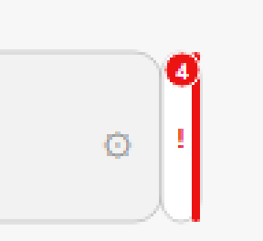
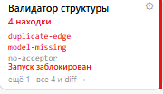
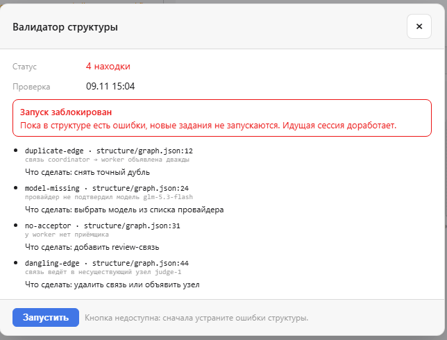

Макет · 09.11.2026 · код не менялся · приёмка 0178 идёт
Заказчик: «индикатор сделан как прицепленный сплющенный узел, а должен быть сдвижной вкладкой, выступающей справа от карточки координатора». Здесь — исправление формы: вкладка срастается с карточкой (квадратный левый край, уходит под неё на 1 px, тон на внешнем ребре), короткая (14 × 44, а не во всю высоту блока), выезжает наведением, а не раздувается, и лежит под карточкой, а не поверх неё. «Было» на листе — настоящий снимок текущей сборки, не пересказ.

| Что | Было (в сборке) | Стало (макет) |
|---|---|---|
| Силуэт | rect rx 8, 4 скругления, рамка 1 px по кругу | левый край 0, справа 7, рамка только сверху/справа/снизу |
| Стык с карточкой | начинается ровно на x+w → зазор и двойная линия | начинается на x+w−1 и уходит под карточку — стыка не видно |
| Статус | отдельная палочка 3 px внутри полосы, со своими скруглениями | само внешнее ребро 2 px (это и есть граница вкладки) |
| Счёт | бейдж 13 px на −6/−6 наружу | цифра 9 px внутри полосы, ничего не выступает |
| Высота | 62 = высота блока | 44 по центру блока (y₀ + 9) |
| Появление | ширина прыгает 14 → 180 без перехода | панель выезжает из-под карточки за 140 мс |
| Слой | поверх карточек и рёбер | над рёбрами, под карточками |
| x | x₀ + w − 1 = 215 |
| свёрнуто | 14 × 44, по центру блока |
| наведение | 180 × 104, верх = верх карточки |
| тень | 0 1px 2px / 7% · в наведении 0 10px 26px / 16% |
| рёбра | начинаются на x+w+13 = 229, не под полосой |
| слой | над рёбрами, под карточками — поэтому шва нет |


| Действие | Что происходит |
|---|---|
| Клик по вкладке | окно валидатора; вкладка остаётся на месте и не «прыгает» |
| Клик по панели наведения | то же окно: панель — это подсказка, а не отдельный экран |
| Клик по ⚙ в панели | окно блока (0164: «Сведения» / «Настройки») |
| Esc | закрывает окно; если окна нет — закрывает панель наведения |
| Tab | фокус на вкладке: рамка 2 px --accent вокруг ручки, панель раскрывается |
| Enter / Space | открывает окно (вкладка — role="button") |
Окно — модальное: вкладка под ним приглушена затемнением. После закрытия панель наведения не «залипает»: состояние сбрасывается, курсор мог уехать.
| Геометрия | Значение |
|---|---|
| Точка прикрепления | x = x₀ + w − 1 (уходит под карточку на 1 px) |
| Свёрнуто | 14 × 44; y = y₀ + (h − 44)/2 = y₀ + 9 |
| Наведение | 180 × 104; верх = y₀ |
| Скругление | ручка 0 7 7 0, панель 0 10 10 0 |
| Рамка | 1 px line-strong сверху/справа/снизу; слева 0 |
| Статус | внешнее ребро 2 px тоном; клип по форме вкладки |
| Фон | --panel + тень стыка linear-gradient(90deg, rgba(20,20,45,.10), transparent 8px) — свет падает от карточки |
| Тон при находках | заливка тоном 9% — цвет читается и на 14 px |
| Тень | ручка 0 1px 2px rgba(20,20,45,.07); панель 0 10px 26px rgba(20,20,45,.16) |
| Зазор до соседа | 204 − 179 = 25 px (карточка исполнителя не задевается) |
| Размер шрифта | счёт 9 / знак 11 / заголовок 10 / статус 10 / коды 8 · mono |
| Движение и поведение | Значение |
|---|---|
| Задержка открытия | 160 мс — курсор, идущий мимо, не раскрывает |
| Задержка закрытия | 250 мс — можно перевести курсор в панель |
| Выезд | сдвиг translateX(−166 → 0), 140 мс, cubic-bezier(.2,.8,.2,1) |
| Прозрачность | 0 → 1 за 120 мс (панель не «выпрыгивает» текстом) |
| Ручка при выезде | гаснет за 90 мс — её место занимает панель |
| Курсор внутри | панель стоит; уход — закрытие через 250 мс |
| Клавиатура | Tab → фокус, Enter/Space → окно, Esc → закрыть |
| reduced-motion | без сдвига, без прозрачности и без задержек |
| Ширина < 1100 | панель 180 прижимается к вкладке, канва не сдвигается — она поповер |